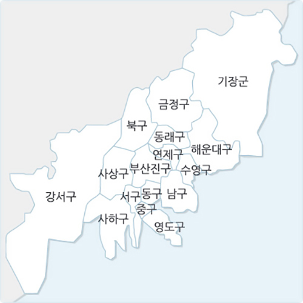
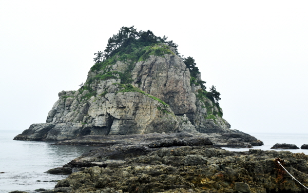
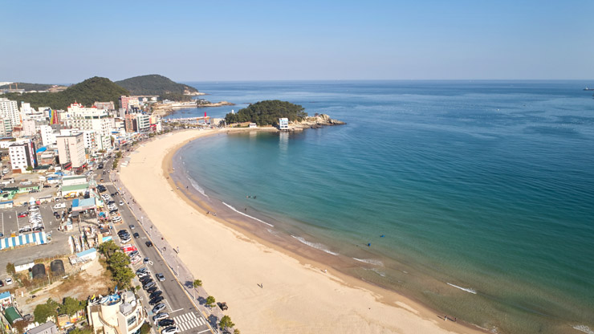
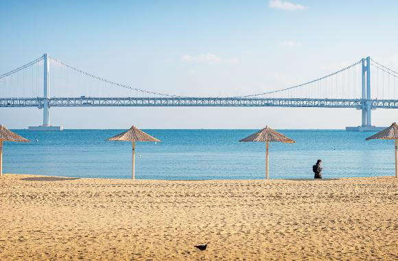
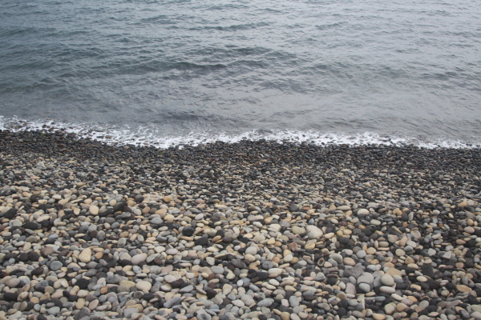

기본현황
-
위치
- 
-
한반도의 남동단에 위치
남으로는 대한해협에 면해 있고, 남쪽을 제외하고는 경상남도와 접하고 있다.
-
1. 수리적 위치
동단: 동경 129°18′13″(장안읍 효암리)
서단: 동경 128°45′54″(가덕도동 미백도)
남단: 북위 34°52′50″(다대동 남형제도)
북단: 북위 35°23′ 36″(장안읍 명례리)→ 북반구 중위도와 동반구 중경도에 해당한다.
위도는 일본의 도쿄, 경도는 일본의 나카사키와 비슷하다. -
2. 기후대적 위치
온대 계절풍 기후대와 대륙 동안 기후대에 속한다.
대한해협에 면해있기 때문에 해양의 영향을 크게 받아 해양성기후의 특징이 잘 나타난다.
-> 여름과 겨울의 기온차가 크지 않으며 4계절의 변화가 뚜렷하여 사람이 살기에 적합한 도시이다. -
3. 관문적 위치
부산은 우리나라 제1의 국제무역항이자 국제공항을 갖고 있어 여러 나라와 연결하는 관문역할을 다하고 있다.
일본은 도쿄를 비롯하여 오사카 및 시모노세키·후쿠오카·나고야와 연결되어 있다.
-
기후
동아시아 계절풍이 탁월한 유라시아 대륙의 동쪽 한반도의 남동단에 위치하고 있기 때문에 4계절이 뚜렷한 온대기후를 나타낸다.
-
봄
시기: 3월 초순~6월 말
평균 기온: 14.9℃봄바람이 무척 강하기(평균 4.4m/s) 때문에 체감온도는 상당히 낮다.
봄에는 일교차가 매우 크고, 이상건조, 황사, 늦서리 같은 특수한 기상현상이 나타난다.Tip 꽃이 많이 피므로 화사한 톤의 옷을 추천!
-
여름
시기: 6월 말~9월 초순 / 장마기간: 6월 말~8월초
평균 기온: 7월 23.9℃ / 7월 하순~8월 중순 최고기온 32℃ 이상기온의 일교차가 5.3℃로서 아주 작은 편이지만 강수량이 가장 많은 계절로, 연 총 강수량 50 ∼ 60%가 내린다.
열대야: 밤에도 최저기온이 25℃이상이 되는 현상Tip 최고기온 32℃ 이상인 무더운 날씨 이므로 얇은 옷을 추천! 장마기간에 우산은 필수!
-
가을
시기: 9월 초순~11월 말
평균 기온: 9월 21.8℃, 10월 17℃, 11월부터 기온 급강하이동성 고기압의 영향으로 날씨가 주기적으로 변하여 9월에 들어서면 아침 저녁으로는 서늘해지기 시작한다.
Tip 아침 저녁으로는 서늘하기 때문에 입고 벗을 수 있는 겉옷을 챙기는 것을 추천!!
-
겨울
시기: 11월 말~이듬해 2월 말
평균기온: 3.8℃일 최저기온이 0℃ 이하인 일수가 부산은 53일로서 제주도를 제외하고 가장 적다.
삼한사온: 북서계절풍이 3 ∼ 4일을 주기로 강해지기도 하고 약해지기도 하는 현상Tip 일본에 비해 많이 춥기 때문에 따뜻하게 입는 것을 추천!
-
-
해안
부산의 해안은 해안선의 출입이 심한 리아스식 해안으로서 해안을 이루는 구성물질이 다양한 것도 하나의 특색이다.
해안을 구성하는 물질이 기반암으로만 되어 있는 암석 해안과 모래로 되어 있는 사질해안이 있다.-

1. 암석해안
암석해안은 해안을 구성하는 물질이 기반암으로 되어 있고 자갈이나 모래, 실트 등과 같은 퇴적물을 찾아볼 수 없는 해안이다.
주로 외해(外海)에 면한 반도, 두각지 또는 여러 섬들의 선단에 잘 나타난다.예) 해운대의 고두말, 동백섬, 우암반도, 오륙도, 영도, 장군반도, 두송 반도, 몰운반도 그리고 가덕도와 같은 대부분의 해안
-

2. 사질해안
사질해안은 암석해안과는 달리 대체로 수려한 모래로 구성된 해안이다.
예) 송정만, 수영만, 부산만, 감천만, 다대만 등의 내만(內灣), 낙동강의 하구 해안
-

2-1. 사빈 - 순수한 모래로 된 해안
현재 해수욕장으로 이용되고 있음
예) 해운대 해수욕장, 송정 해수욕장, 광안리 해수욕장 등

2-2. 역빈 - 자갈로 된 해안
사빈에 비해 규모는 크지 않으나 모양새가 좋은 둥근 옥돌로 되어 있는 것이 특징
예) 영도의 동삼동 해안, 곤포의 집 해안, 우암반도의 승두말과 신선대 사이의 만입 등의 해안
2-3. 이빈 - 뻘로 된 해안
낙동강이 운반해온 미세한 입자의 실트 내지는 실트질 점토가 퇴적되어 형성된 해안
예) 낙동강 하구인 낙동강 삼각주의 말단
-